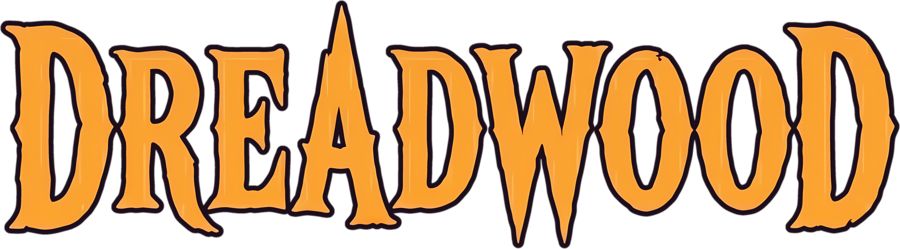
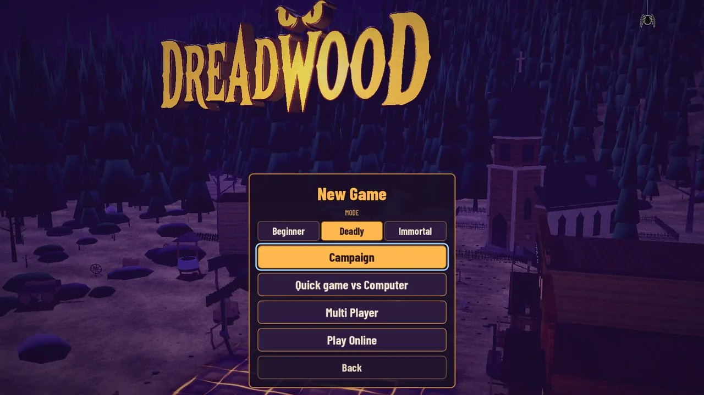
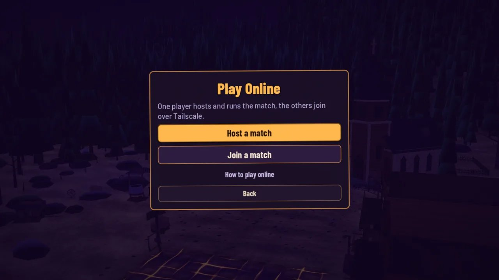
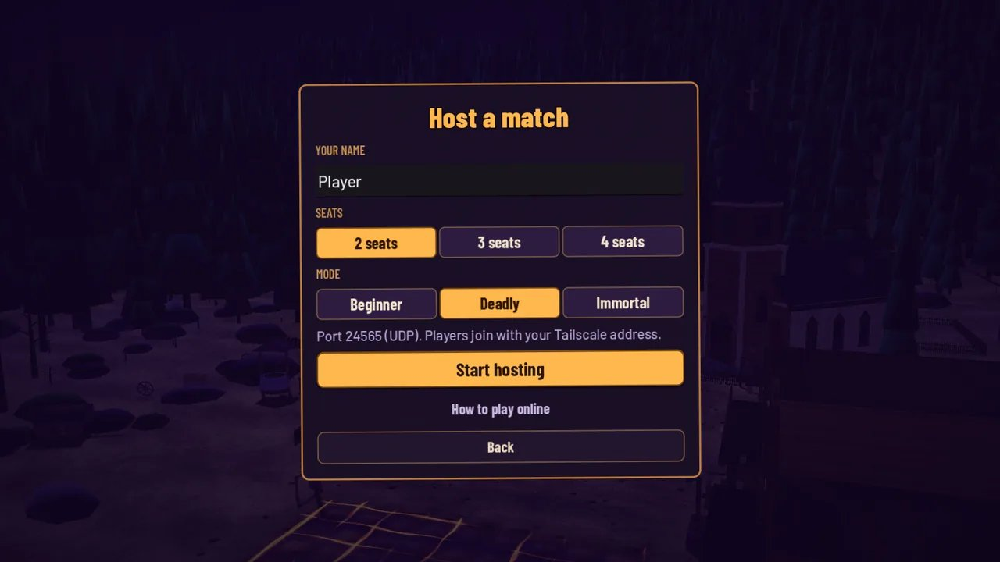
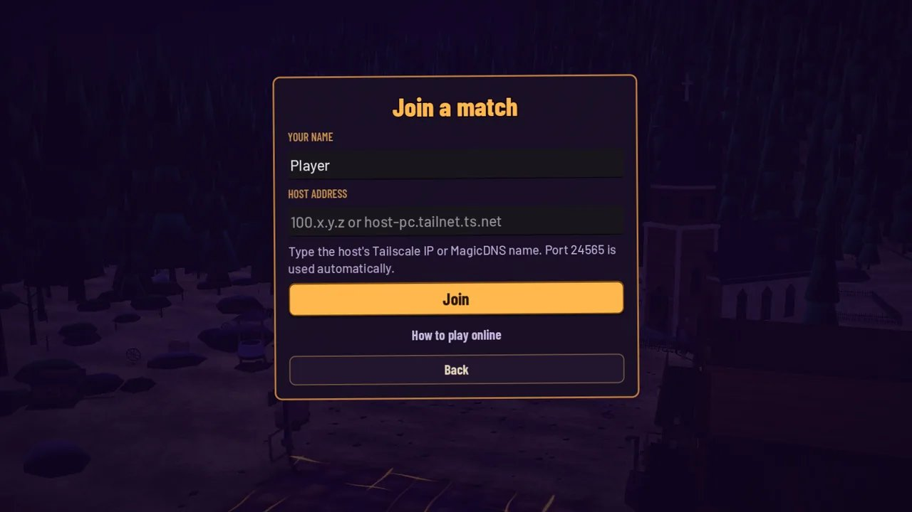
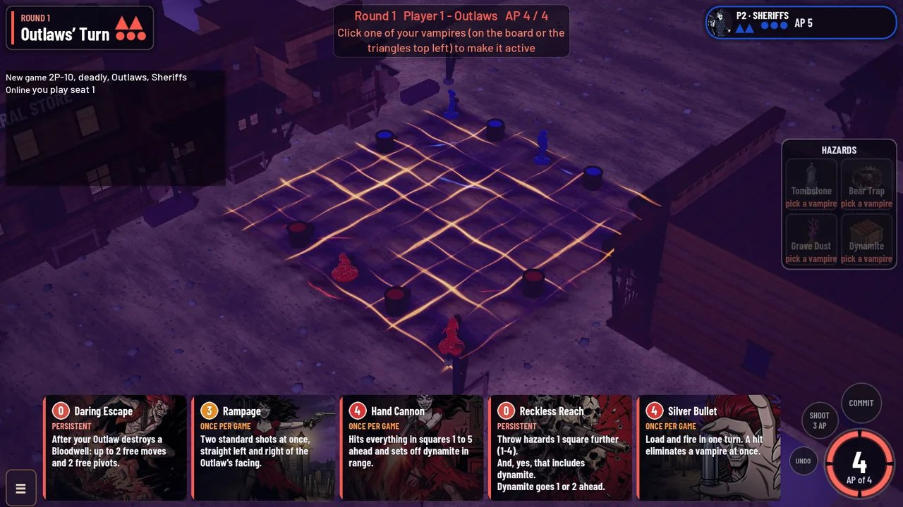
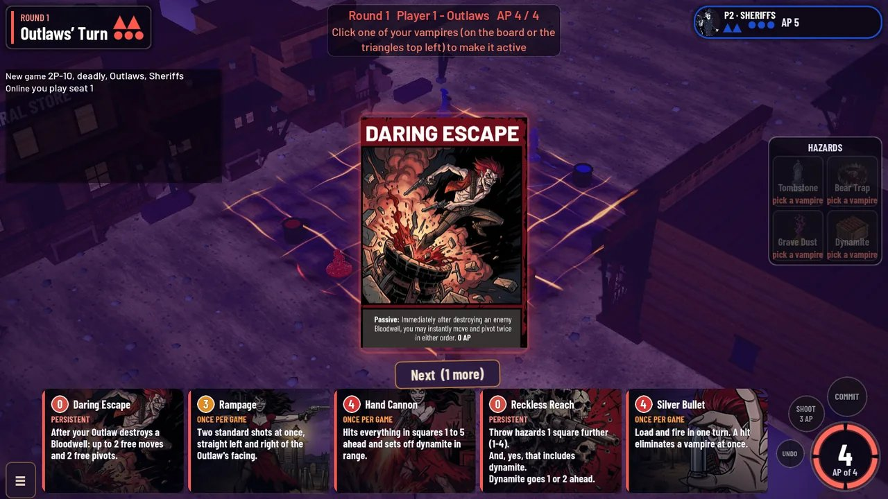
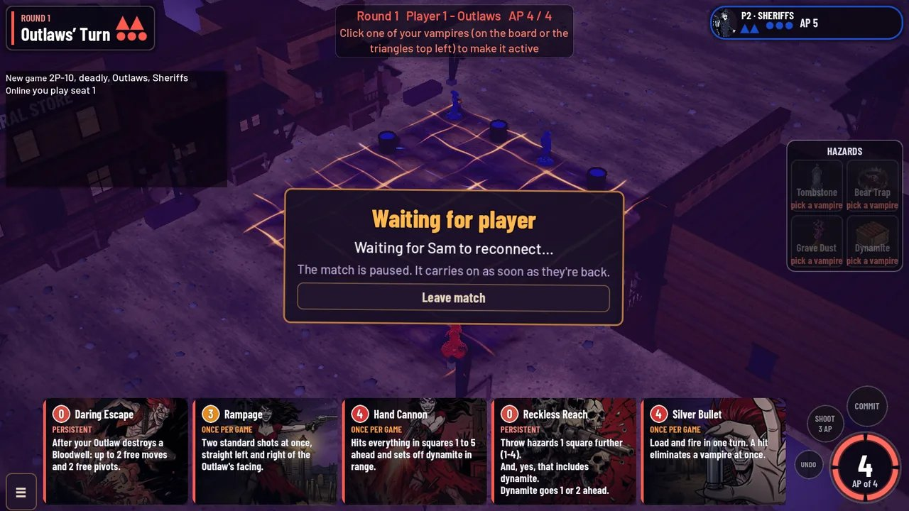

Play online
Host or join a match over Tailscale
On this page
The game refuses a different build with Version mismatch. The port is filled in automatically; nobody types it.
Install Tailscale
Every player does this once. The host and the joiners must be in the same tailnet.
- Install Tailscale for Windows from tailscale.com/download.
- Sign in. The host invites the others from the Tailscale admin console (Users → Invite users), or shares the machine (Machines → … → Share).
- Confirm the Tailscale tray icon says Connected.
Host a match
- Start Dreadwood, then open New Game → Play Online.

- Choose Host a match.

- Under YOUR NAME, enter a name. Under SEATS, pick 2, 3 or 4. Under MODE, pick Beginner, Deadly or Immortal.
- Click Start hosting. The Lobby opens.

Join
- Open New Game → Play Online → Join a match.
- Enter YOUR NAME. Under HOST ADDRESS, paste the host's Tailscale IP or MagicDNS name, then click Join.

- In the Lobby, pick a faction from the drop-down next to the name under SEATS. The host clicks Start. Start stays disabled until every seat has a faction.

Ability cards can open as a pop-up. Dismiss with Next or the close control.

Reconnecting
- A drop mid-match shows Connection lost. Reconnecting... and retries every 3 seconds for about 2 minutes. Everyone else sees Waiting for <name> to reconnect....
- If it gives up with Could not reconnect to the host., go to Play Online → Join a match with the same name and address. The seat comes back.
- Leave quits the lobby or match. If the host leaves, the match ends.

Troubleshooting
| Symptom | Fix |
|---|---|
| Joining sits on Connecting…, port 24565 | Both PCs must show Connected in Tailscale and share a tailnet. Ping the host's 100.x address. |
| Version mismatch | Everyone installs the same Dreadwood build (v19 or later). |
| No address in the Lobby | Start Tailscale, reopen the Lobby, use Copy address. |
| Windows Firewall prompt on first host | If Windows Firewall asks, allow Dreadwood on private networks. |
| Works on the LAN but not over the internet | Use the Tailscale 100.x address, not a LAN 192.168 or 10.x address. |
| Still stuck | Open How to play online in the game for this guide. |